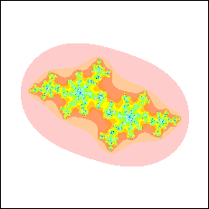

|
 |
| Jc is the crinkly circle bounding Kc | Jc = Kc, the dusting of dots |
| c = -0.5 | c = -0.5 + 0.3i | c = -1 + 0.16i |
| c = -0.12 + 0.765i | c = i | c = -0.3 + 0.71i |
| c = -0.775 + 0.177i | c = 0.44 + 0.29i | c = -0.513 - 0.579i |
| The Julia set Jc is the boundary, or edge, of the filled-in Julia set Kc. Here are two examples. | |||||||||
| |||||||||
| Here are some Julia sets for different c. | |||||||||
|
Return to Julia Sets.